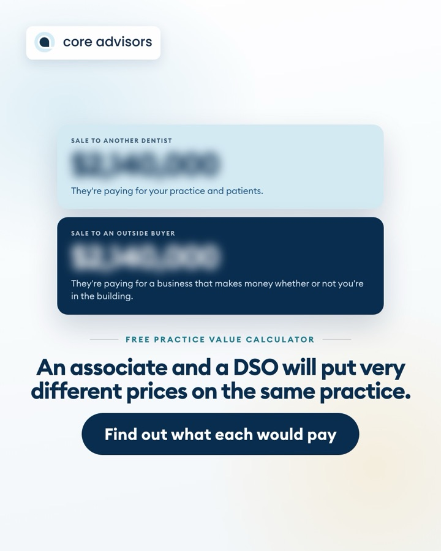

Practice value ad4 leads
C
Core Advisors, LtdSponsored
We work only with dentists, and one of the first questions owners ask us is what their practice would sell for. Our honest answer is that it depends on who's buying. An associate or another dentist will usually pay one price, and a DSO or investor will usually pay more for the same practice.
👉 Tap Learn more and answer a few quick questions. Our team will walk you through what each buyer might pay, and you can try our free Practice Value Calculator right after.
